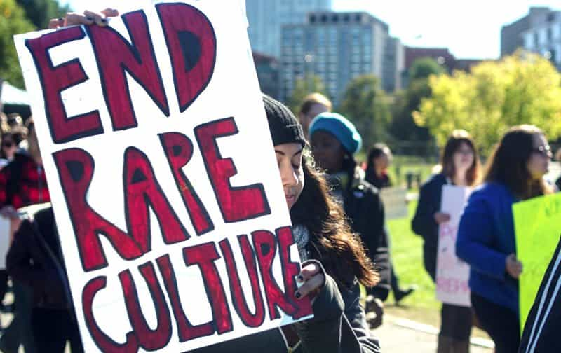

< < < Back
If Rape Culture Is So Normal, Why Haven’t You Ever Witnessed A Rape? – Return Of Kings
When was the last rape you witnessed (and did nothing to stop)? If you’re like me and 99.99% of people in the Western world, you have not seen someone committing rape and therefore never had a chance to stop a rape. Nonetheless, we are accosted nearly every day with claims by feminists that rape has been normalized because of “rape culture.”
Unsurprisingly, SJWs assert that society normalizes rape when every alleged rape you hear about involves a private situation away from others who could conceivably intervene. Rape is so normalized that no one ever does it publicly.
Now compare the idea of “rape culture” with a host of other crimes. Although such acts are illegal, men punching other men, all too often to the point of permanent brain damage or death, happens in public all the time. In my native Australia, the senseless killing of 18-year-old Thomas Kelly, felled by an unprovoked assault, highlighted the propensity of men attacking other men, usually without any explanation.
During my lifetime I have observed perhaps 100 cases of serious brawling and criminal assaults in nightclub precincts, hotel bars and other related places. I have never seen either a rape or other sexual assault. Can someone please explain this contrast?
Women objectify themselves so, um, rape culture?
Action: individual woman self-sexualizes and self-objectifies. Result: society promotes rape culture. Right.
With 9,999 out of every 10,000 alleged rapes and sexual assaults involving private locations, feminists have no evidence that rape is normalized. So they clutch at straws within straws and claim that the objectification of women in Hollywood, print media, music videos and elsewhere is an embodiment of “rape culture.”
Promiscuous women who parade themselves on Instagram are usually forgotten, but even those girls featured on patriarchal billboards and in television advertisements, who are handsomely paid to exhibit their lithe bodies, are used to make sweeping statements that society promulgates the acceptance of rape. Modeling and other industries, run by disproportionate numbers of women and gay men, thus become key scapegoats in this claim that heterosexual males prop up the so-called epidemic of raped women.
Although SJWs, typically socialist, dismiss the idea of the positive “invisible hand” of capitalism, they adore the notion that hundreds of millions of men in the Western world can either secretly coordinate or faithfully follow the whims of this overarching rape culture. With varying levels of intelligence, professional success, social status and other markers, these men manage not to rape women in public, all while keeping the underlying conspiracy going.
The degree of calibration this would involve defies belief. But it is the supposed trump card of those advocating for social science theories so warped that they make moon landing conspiracies look well thought out.
Rape culture is Orwellian Newspeak at its best
Rape culture is so prevalent that women can organize in groups of several dozen or hundred to protest rape culture. That makes perfect sense.
“97% of rapists never go to prison” is a perfect illustration of how surveys, which twist the definition of sexual assault to include, among other things, catcalling, men asking for sex and other non-events, are tailor-made for continual accusations of rape culture. You may have heard before that war is peace, freedom is slavery and ignorance is strength. Likewise, according to feminists, rape is a crime but it’s a crime which can feminists can conclusively determine without a criminal investigation and trial. And rape culture exists because feminists, magically, can determine how many rapes occur. Except, conveniently, none of these normalized rapes occur publicly.
It additionally speaks volumes that feminists can conjure up statistics about how many rapists don’t go to jail, but refrain from indicating how many men are prima facie rapists. The problem these feminists face is twofold: 1) claiming many men (10-20%) rape a woman or two each would backfire spectacularly and 2) claiming a tiny number of men commit all SJW-defined rapes (and thus are responsible for raping between a dozen or 20+ women each) is clearly preposterous.
While feminists do not challenge the need for evidence in armed robbery, tax evasion, and other trials, allegations of male-on-female domestic violence and rape should be conducted on complainant testimony or otherwise rape culture is in full swing. In the meantime, that sticky situation of how rape almost never occurs publicly, unlike many other categories of crime, is left untouched.
Rape culture is the biggest hoax of the 21st century

If rape is so normal, why aren’t women raped at SlutWalk events under the eyes of police?
Holding onto the coattails of David Icke’s lizard people thesis, rape culture pundits such as University of Connecticut alumnus Holly Wonneberger are maintaining that the viral video of a drunk male UConn student demanding mac and cheese to eat is comparable to sexual violence. Reminiscent of South Park‘s proposition that Family Guy episodes are written by manatees pushing “idea balls” into a machine, feminists take any news event or trend and repackage it in a way that supports their self-serving narrative.
Male-on-female rape exists, typically perpetrated by the smallest minority of violent men on the smallest minority of women, yet “rape culture” is nothing but a fairytale designed to keep professional feminists and their followers angry, akin to the Two Minutes’ Hate in 1984.
Or perhaps SJWs just haven’t cracked the door codes to where we heterosexual men have our secret subterranean “how to rape with impunity” meetings.
Read More: 4 Things In Common Between “Rape Culture” And Roofie Hysteria